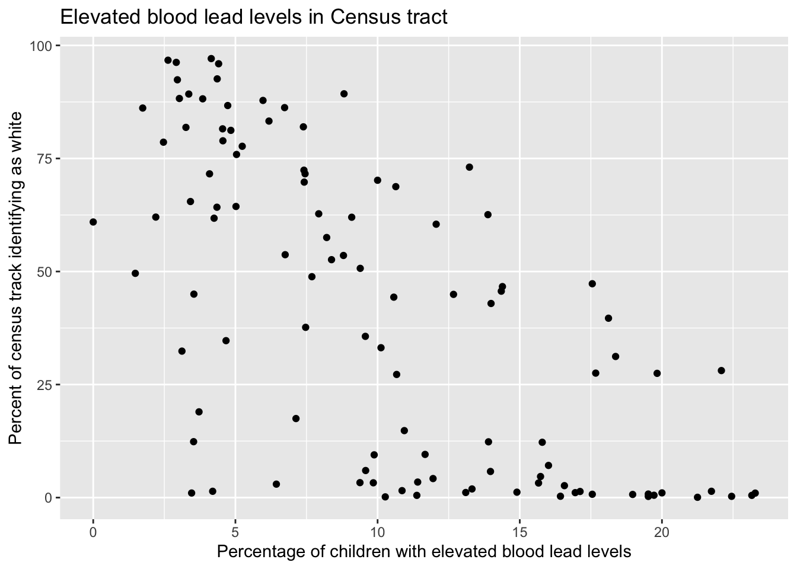
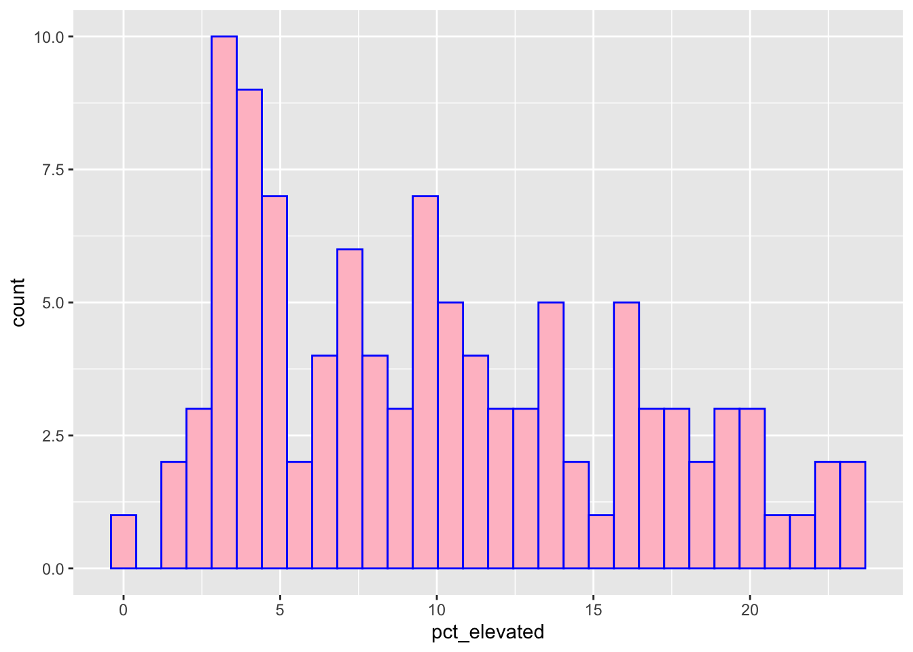

library(tidyverse)
library(janitor)stl_lead_mw
Day 1 Activity
stl_lead <- read_csv(here::here("data", "stl_lead.csv")) %>%
clean_names()summary(stl_lead) geo_id tract_ce name_lsad count_tested
Min. :2.951e+10 Min. :101100 Length:106 Min. : 23.0
1st Qu.:2.951e+10 1st Qu.:106425 Class :character 1st Qu.: 411.0
Median :2.951e+10 Median :112350 Mode :character Median : 694.0
Mean :2.951e+10 Mean :113386 Mean : 737.4
3rd Qu.:2.951e+10 3rd Qu.:119102 3rd Qu.: 923.2
Max. :2.951e+10 Max. :127600 Max. :2116.0
pct_elevated total_pop total_pop_moe white
Min. : 0.000 Min. : 620 Min. : 94.0 Min. : 1.0
1st Qu.: 4.588 1st Qu.:2025 1st Qu.:249.5 1st Qu.: 88.5
Median : 9.480 Median :2912 Median :333.5 Median :1290.0
Mean :10.164 Mean :2999 Mean :353.3 Mean :1371.7
3rd Qu.:14.380 3rd Qu.:3784 3rd Qu.:439.5 3rd Qu.:2168.2
Max. :23.280 Max. :7069 Max. :832.0 Max. :6128.0
white_moe black black_moe poverty_tot
Min. : 4.0 Min. : 35.0 Min. : 38.0 Min. : 158.0
1st Qu.: 60.5 1st Qu.: 633.2 1st Qu.:183.2 1st Qu.: 408.5
Median :212.5 Median :1334.5 Median :269.0 Median : 651.5
Mean :201.4 Mean :1429.9 Mean :288.4 Mean : 786.9
3rd Qu.:299.8 3rd Qu.:2029.0 3rd Qu.:379.2 3rd Qu.: 955.8
Max. :751.0 Max. :4572.0 Max. :760.0 Max. :2801.0
poverty_tot_moe poverty_u18 poverty_u18_moe
Min. : 65.0 Min. : 0.0 Min. : 3.00
1st Qu.: 160.2 1st Qu.: 66.5 1st Qu.: 61.25
Median : 241.5 Median : 173.5 Median :120.50
Mean : 270.5 Mean : 249.8 Mean :140.08
3rd Qu.: 337.5 3rd Qu.: 341.8 3rd Qu.:194.75
Max. :1049.0 Max. :1320.0 Max. :595.00 head(stl_lead)# A tibble: 6 × 15
geo_id tract_ce name_lsad count_tested pct_elevated total_pop total_pop_moe
<dbl> <dbl> <chr> <dbl> <dbl> <dbl> <dbl>
1 2.95e10 118100 Census T… 345 9.57 1161 192
2 2.95e10 117400 Census T… 871 12.1 4307 447
3 2.95e10 126700 Census T… 458 18.1 1089 199
4 2.95e10 119102 Census T… 182 2.2 3237 309
5 2.95e10 126800 Census T… 486 4.73 3490 231
6 2.95e10 126900 Census T… 1296 15.7 4590 826
# ℹ 8 more variables: white <dbl>, white_moe <dbl>, black <dbl>,
# black_moe <dbl>, poverty_tot <dbl>, poverty_tot_moe <dbl>,
# poverty_u18 <dbl>, poverty_u18_moe <dbl>dim(stl_lead)[1] 106 15stl_lead_prop <- data.frame(stl_lead) %>%
dplyr::mutate(prop_white = (white / total_pop) * 100)stl_lead_plot <- ggplot(data = stl_lead_prop, aes(x = pct_elevated, y = prop_white)) +
geom_point() +
labs(x = "Percentage of children with elevated blood lead levels", y = "Percent of census track identifying as white", title = "Elevated blood lead levels in Census tract")
stl_lead_plot
ggsave(here::here("figs", "stl_lead_plot.png"), height = 5, width = 6)stl_lead_histogram <- ggplot(data = stl_lead_prop, aes(x = pct_elevated)) +
geom_histogram(color = "blue", fill = "pink")
stl_lead_histogram
ggsave(here::here("figs", "stl_lead_histogram.jpg"), height = 5, width = 6)